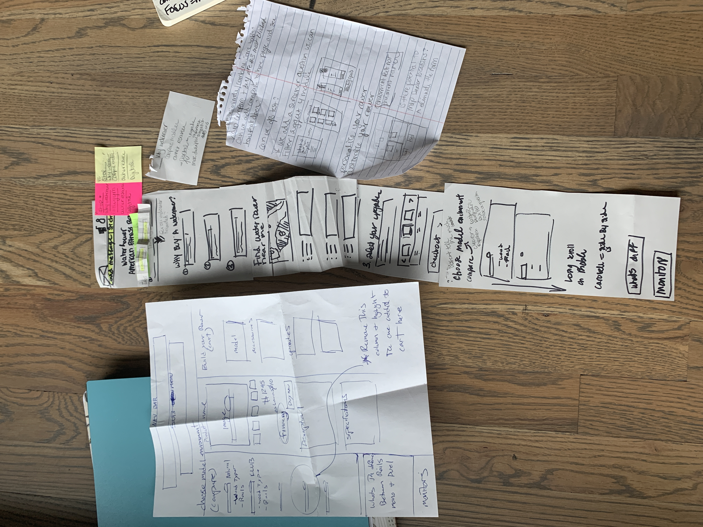
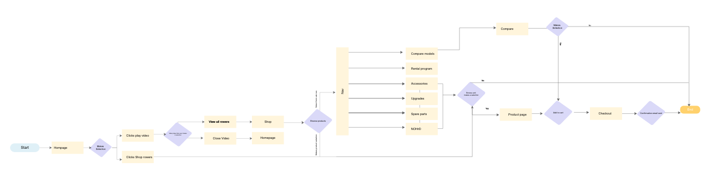

Collette
This family owned company has been opperational since 1918 provides guided touring to all seven continents and serving multiple channels including direct to consumers, groups, and agents.
Research Process
-
To kick off the project, we conducted extensive research to better understand the target audience and their needs. We used a combination of surveys, interviews, and usability testing to gather data. Based on our research, we identified the following key insights: Customers often struggle to find the information they need, leading to frustration and ultimately abandonment of the website. The website's design is outdated and unappealing, making it difficult to engage with the content. Customers want a more streamlined booking process that is easy to navigate and understand. My first task was to create a competitive analysis of 14 direct competitors, 10 indirect and 10 e-commerce to get a understanding for the competitive landscape and identify opportunities and weaknesses as well as informing design decisions.
-
Once i had shown the competitive analysis to the team and we had discussed the top priorities I conducted unmoderated balanced comparision tests on our competitors and our own website before planning the website redesign.
-
After compiling the results from user testing various aspects of interest up for review for the redesign i added those findings in the document and prototyped it to be able to share the information directly to stakeholders.
Design Process
- 
- 

-
Due to the tight timeline i opted for low fidelity wireframes from a template app for xd. This however was not met with glee as the creative department who was in the middle of defining their brand colors and messaging felt it was hindering the creative process to be handed a color by numbers wireframe. Department politics and unclear final decision making power left the project in a state of rework as key personel changes left us relying on ex-employees for deliverables. One Key issue that was a point of contention was finding a WAGAC compliant green button that was bright but accessible to all poor alignment and documentation processies left us with an inflated project timeline and frustrated teammembers.
-
While our digital product team waited to get final deliverables to finalize wireframes and handoff to developers I began trying to create a design system in hopes to keep consistency amoung components and align branding guidelines. However trying to keep that updated in addition to all incoming projects and ongoing research proved to be an impossible feat with the timeline. I did not expect the issues that came up and the time it took to
-
Previously to my tenure at Collette there was no developer handoff tools and ux designers were doing front end coding but due to covid the team was rebuilding and i was the first on the job which meant advocating for zeplin in order to balance my time and others according to the project timeline.
Delivery Process
.png)

-
Ultimately the website took seven additional months of work and manpower there was alot of confusion in the start of the project with key people leaving and relianse on ex employees to deliver work that extended the timeline. My hope to create a design system failed and will require much more time and rework to reflect all the changes the project has undergone. We are now conducting moderated and unmoderated testing before the launch and are currently compiling that information in order to prioritize features in the second phase of the project which includes several more pages and an overhaul of the booking engine. rower types to group the machines into. This way it was easier to describe and digest on mobile.
-
View Prototype